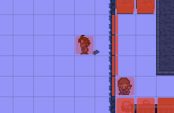

The Collision System uses a single layer for both static and dynamic objects. It simply checks if a tile is either blocked or occupied by a character.

Additionally it supports blocking only certain directions. This is useful for different heights or bridges.
A collision tile can be any combination of left,right,up and down.
All of this is encoded as a single number by using bitwise combination. When a character steps onto a tile that is partly blocked, it remembers the tile.
When leaving the tile, it is set back to the remembered state.